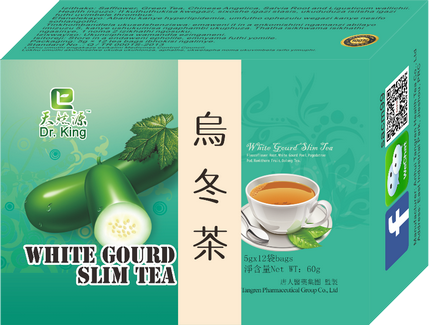
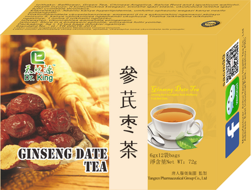
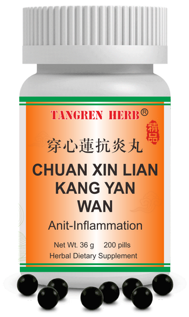

The HerbalistTraditional Chinese Wellness
Flash Offer — Expires 15 June 2026
FEEL LIGHTER IN DAYS,
NOT MONTHS.
Support your body's natural fluid balance with Slim Tea and White Gourd Slim Tea. A gentle herbal protocol designed to reduce bloating and help you feel less heavy and uncomfortable.

Slim Tea
Detox Blend
Was R159.00
R119.00
Save R40

White Gourd Slim
Herbal Tea
Cognitive Performance Stack · Spleen Qi
STOP BORROWING STAMINA
WITH COFFEE JITTERS
Replace the cycle of caffeine spikes and crashes. Gui Pi Wan, Ginseng Date Tea, and Kuding Tea help support sustained focus, balanced energy, and daily mental clarity.
.png)
Gui Pi Wan
Spleen Aid

Ginseng Date
Herbal Tea
Was R299.00
R219.00
Save R80

Kuding Tea
Clearance Tea
Seasonal Defense Stock — Priority Access Expires 31 July 2026
BUILD A STRONGER
DAILY DEFENSE
Traditional herbs selected to support respiratory wellness, seasonal resilience, and everyday vitality when environmental demands are at their highest.

Anti-Virus
Defensive Tea
Was R185.00
R135.00
Save R50
.png)

Chuan Xin Lian
Defensive Pill